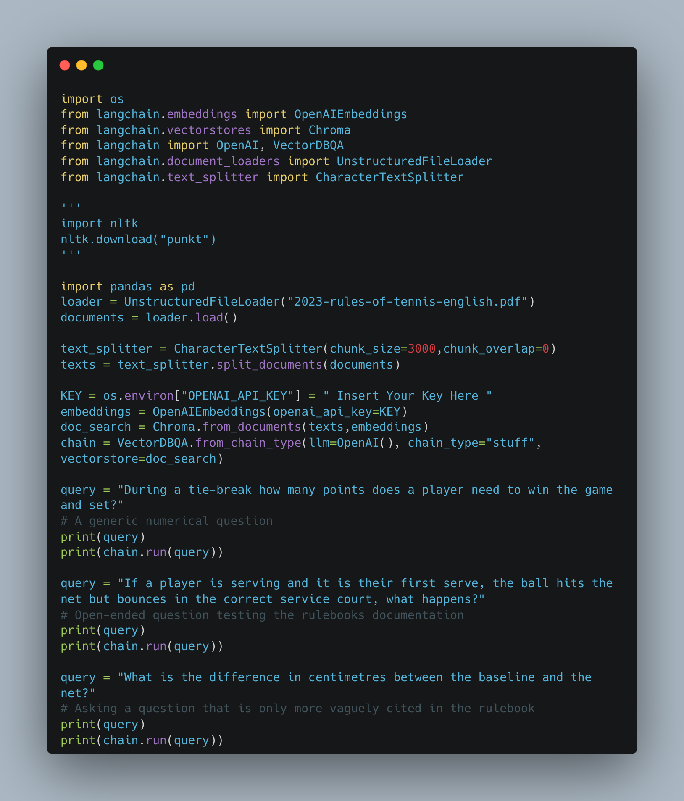
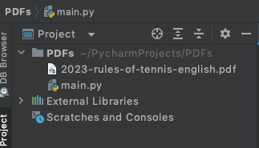
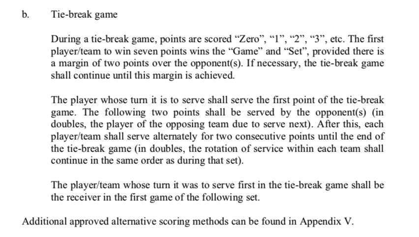
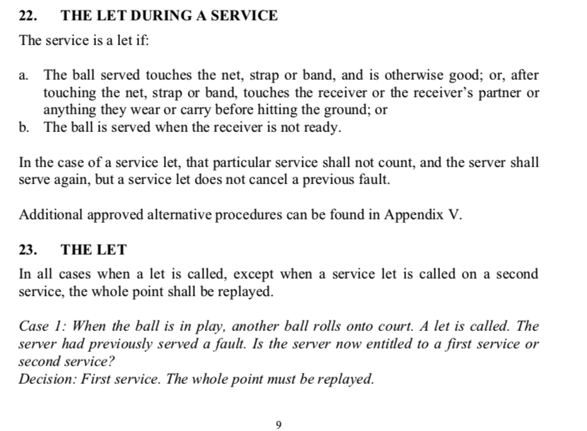

Hi all,
In previous blogs we looked at analysing CSV files using Langchain and ChatGPT, we've also looked at extensions that enable you to be able to use it with different tools.
Today we are going to be looking at whether we can load documents (PDF's) and analyse the content within them! Now this question of analysing PDF's was asked by my best friend Arj, (and previous flat mate for those of you that watch Iron Viz 2022, yes we have riveting conversations as he wanted to analyse Tax documents) So to spruce it up a bit, I've decided we look at something equally as boring.... The rule handbook of tennis!
You can view the ITF rulebook here, as well as in the GitHub repo at the top of the page. The rulebook is 46 pages in length. We will look to refer to certain sections of it.
You will need
An API Key from OpenAI
An IDE to write python code in (I've gone for PyCharm)
As a brief refresher, I've written previously how you can get this key through signing up to their program. (You get free $5 worth of tokens!) You can sign up on OpenAI.com
Once you've got your key, let's head on over to write our python code. The code is stored in the main.py file. I also put a copy of the rulebook locally to access.

Importing necessary modules: The code begins by importing several modules, including os and langchain. You will realise that when your code errors, it will tell you which packages will need to be installed beyond this. These modules provide functionalities for working with files, embeddings, vector stores, document loaders, text splitting, and data manipulation.
Downloading NLTK data (commented out): There is a commented-out section, this doesn't need to be done more than once. NLTK stands for Natural Language Toolkit.
We then Initializing the UnstructuredFileLoader: The code creates an instance of the UnstructuredFileLoader class from the Langchain library, passing our pdf file "2023-rules-of-tennis-english.pdf" This is our file we want to load, of course you can use one of your own. The loader is used to... load the content.

That loaded document is then stored in the documents variable.
After that we split the text into chunks - The code creates an instance of the CharacterTextSplitter class from Langchain, specifying a chunk size of 3000 characters (You can pick your own) and no overlap between chunks (again, you can amend this value).
The split documents method is then called on the text_splitter, passing through the documents. This breaks it up into smaller storable chunks.
The code sets the value of the KEY variable as the OpenAI API key, this can be re-written if you want to host your key elsewhere.
You will see we run three queries in my example. Each query is a question stored in the query variable each time. We print the result into the console. Perhaps you may want to make this so that they are saved somewhere as an output, if you do amend the code.
So that's the code, but what's the output and was it entirely accurate?
We asked it based on the document:
During a tie-break how many points does a player need to win the game and set?
It responded:
The first player/team to win seven points wins the “Game” and “Set”, with a deciding point if the score reaches six all.
Which is correct!
The answer to this was found on page 5.

We then asked it:
If a player is serving and it is their first serve, the ball hits the net but bounces in the correct service court, what happens?
It responded:
The service is a let and the server shall serve again. The whole point must be replayed.
Again, correct!
The context for this question can be found on page 9 of the rulebook.

I then decided to ask it a question that can be worked out, but isn't necessarily in the rulebook.
That question was:
What is the difference in centimetres between the baseline and the net?
Now you will see that it isn't directly within this diagram. Only the full length of a court is listed. (page 32)
It responded:
The baseline is 21 feet (6.40 m) from the net.
So not quite the answer, but it has managed to look at the diagram and state the difference between the service line and the net. I guess maybe I shouldn't ask questions that aren't directly within the PDF. This does make sense in terms of how the code operates but something to be aware of in terms of the type of questions asked and how you phrase them.
So that's it for this week. A nice easy one where you can go add your own PDF's in.
A few hiccups and pointers along the way to get your code working:
Make sure you have all your necessary packages
Amend your chunk sizes and overlap as appropriate
Make sure you have a working API key
Going further, why not:
build a front end where you can upload a document and ask the question in a chat bot?
Use your own PDF that you want to analyse
Play with different ways of articulating a question to see the differences in responses
 It responded:
The baseline is 21 feet (6.40 m) from the net.
So not quite the answer, but it has managed to look at the diagram and state the difference between the service line and the net. I guess maybe I shouldn't ask questions that aren't directly within the PDF. This does make sense in terms of how the code operates but something to be aware of in terms of the type of questions asked and how you phrase them.
So that's it for this week. A nice easy one where you can go add your own PDF's in.
A few hiccups and pointers along the way to get your code working:
It responded:
The baseline is 21 feet (6.40 m) from the net.
So not quite the answer, but it has managed to look at the diagram and state the difference between the service line and the net. I guess maybe I shouldn't ask questions that aren't directly within the PDF. This does make sense in terms of how the code operates but something to be aware of in terms of the type of questions asked and how you phrase them.
So that's it for this week. A nice easy one where you can go add your own PDF's in.
A few hiccups and pointers along the way to get your code working: